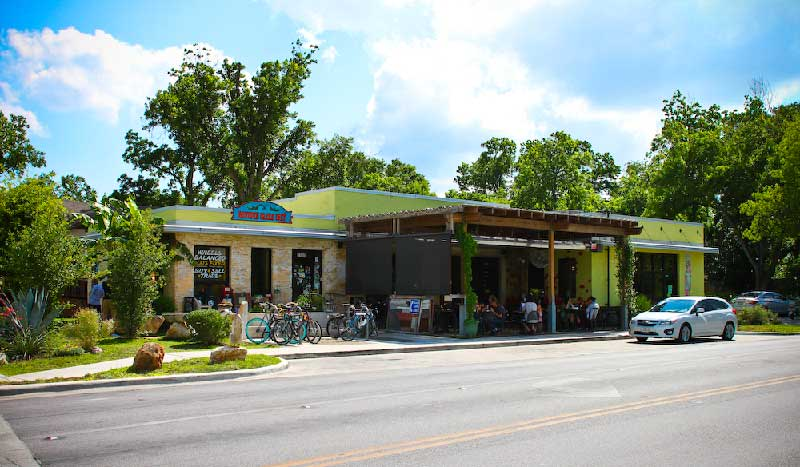

Rated #6 in the U.S.
for best vegatrian food restaurant
welcome to
bouldin
creek
cafe
creek
cafe
about us
We provide fairly priced, wholesome vegetarian (with vegan options) food, and have shown vegetarians and non-vegetarians alike that veggie fare can be both flavorful and satisfying. We also have a wide array of tasty beverages.


contact us
512–416–1601Monday – Friday: 7am – Midnight
Saturday – Sunday: 8am – Midnight
Happy hour: 3pm – 7pm
location
1900 South first Austin, TX, 78704